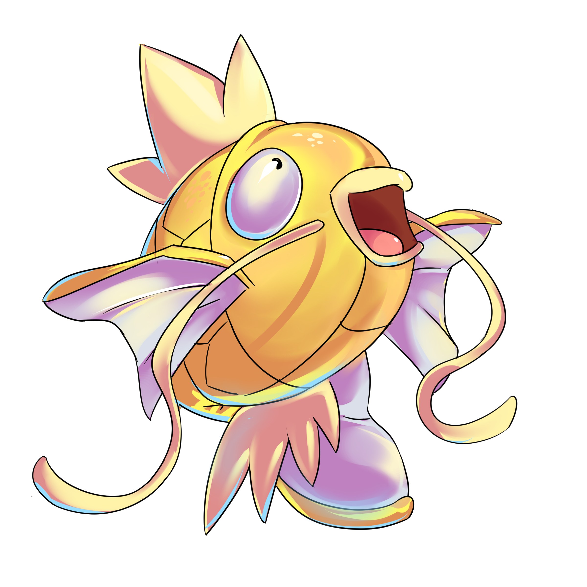

Once upon a time, on the island of Buyan, there stood a small tumble-down cottage; and in that cottage dwelt an old man and woman. They lived in great poverty. The old man would cast his net and try to catch some fish;but all he caught was barely enough to keep body and soul together each day. One day the old man cast his net, began to haul it in and felt something heavy in it; never had he felt the like before. He could hardly pull it in. Yet when he looked he saw the net was empty: except for a little fish. But it was no ordinary fish?it was golden. And it spoke in a human voice, "Don't take me, old man! Let me go back to the deep blue sea and I'll be useful to you: I'll do whatever you wish." The old man set to thinking, then said, "I need nothing from you: go back and swim in the sea."
He threw the golden fish into the sea and turned for home. The old woman asked him how much he had caught. "Nothing but a single golden fish, and that I threw back into the sea," he said. "It spoke in a human voice: 'Let me go,' it said, 'into the deep blue sea and I'll do whatever you wish.' I was sorry for it, asked for naught and set it free." "Oh, you old devil!" exclaimed his wife. "Good luck falls from the skies and you haven't the sense to grab it." She grew angry and cursed the old man from mom till night, giving him no peace. "You could have asked for bread at least," she yelled at him. "We won't have a dry crust to eat soon, what'll you do then?" In despatir the old man went down to the seashore to ask the golden fish for bread; coming to the sea-edge he shouted in a loud voice: "Fish, oh fish! Stand with your tail on the sea and your head facing me." The fish came swimming to the shore. "What do you need, old man?" it asked. "The old woman is angry with me and has sent me for bread." "Go home, you'll have bread aplenty," said the fish. So he went back home and asked his old woman whether there was any bread. "Bread aplenty," she replied. "But here's the rub: my tub has sprung a leak and I can't do the washing. Go back to your golden fish and ask it for a new wash-tub."
Back went the old man to the sea. "Fish, oh fish!" he shouted. "Stand with your tail on the sea and your head facing me." Up swam the golden fish. "What do you need, old man?" it asked. "The old woman sent me, she wants a new wash-tub." "All right, you'll have a wash-tub too," it said. Back home went the old man; but before he had crossed the threshold, the old woman set on him again. "Go back," she said, "to your golden fish and ask it to build us a new house. We can't live here any more, it's falling about our ears." Off went the old man to the sea, calling, "Fish, oh fish! Stand with your tail on the sea and your head facing me." Up swam the fish, stood its tail on the sea and faced him directly, asking, "What do you need, old man?" "Build us a new house," he said, "the old woman is angry and won't give me any peace. She says she won't live in the old cottage anymore, because it's falling about her ears." "Cheer up, old man," said the fish. "Go on home and say your prayers; all will be done."
So the old man returned and what should he see but a brand new house, made of oak, with carved eaves. And there was his old woman rushing at him, even wilder than before, cursing louder than ever: "Oh, you old fool! You don't know good luck when you stare it in the face. You ask for a house and think that's enough! No, you go back to that golden fish and tell it this: I don't want to be a fisherman's wife, I want to be a fine lady, so that good folk do as I tell them and bow low when they meet me." Back he went to the sea and said in a loud voice, "Fish, oh fish! Stand with your tail on the sea and your head facing me." Up swam the fish, stood its tail on the sea and faced him directly. "What do you need, old man?" it asked. "The old woman gives me no peace," he said. "She's gone raving mad: she's tired of being a fisherman's wife, she wants to be a fine lady." "Very well, cheer up. Go home and say your prayers; all will be done."
So the old man went home and was surprised to see a big stone house in place of his hut, rising up three floors; with servants running about in the yard, cooks bangmg in the kitchen, and his old woman sitting on a high chair in a rich brocade dress, giving orders. "Hello, wife," the old man said. "What impudence!" the bro- caded lady cried. "How dare you address me, a fine lady, as your wife. Servants! Take that silly old dolt to the stables and give him forty lashes till he's sore." Right away the servants came running in, seized the old man by the scruff of the neck and hauled him off to the stables. There he got such a thrashing that he could barely stand. After that the old woman made him her yardman; he was given a broom to sweep the yard and made to eat and drink in the kitchen. What a life the old man led: all day sweeping out the yard, and if he missed a speck of dust he was hauled off to the stables for a whipping. "What a witch!" he thought. "I bring her good fortune, and she sticks her nose in the air, doesn't even consider me her husband." read more...
